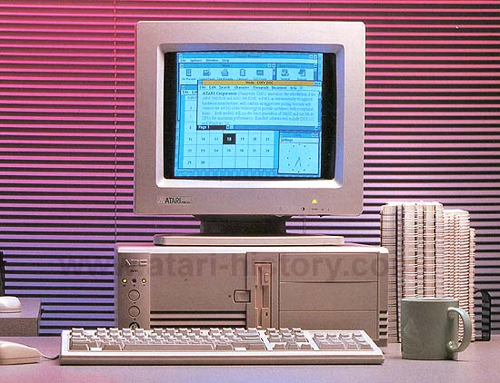

The Atari ABC line of computers were Atari's last line of desktop personal computers. The systems were in custom Atari ABC (Atari Basic Computer) cases which were elegant and stylish. They included keyboard and mouse. Two flavors were available, the 20Mhz SX version or the 40 Mhz DX version of Intel 386 Processor. They came standard with 1MB of memory, expandable to 8MB. An optional 80387SX was available. Pheonix BIOS for compatibility. 2 8-bit slots and 4 16-bit slots (ISA). Super VGA video. 40MB hard disk and 3.5" floppy. 1 Parallel, 2 Serial and 1 Game Port included. The systems camed packaged with MS-DOS 5.0 and Windows 3.0
The DX version had 8 16-bit ISA slots, 2MB of memory expandable to 64MB,
used AMI BIOS and came with an 80MB hard drive.